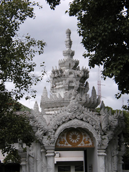
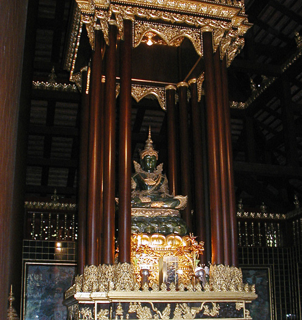

Thailand Trav-E-Logs©
| Chiang Khong, Chiang Rai | |
| back: Luang Nam Tha, Muang Sing | Temple in Chiang Khong. |
================================= Took a long-tail boat across the Mekong River to re-enter Thailand. Travel in countries where your personal communications are limited can be mentally taxing, so chose to relax a full day at the border town of Chiang Khong in Thailand, a country which always seems to have its share of folks conversant in English. Then took an uneventful bus ride to the ancient city of Chiang Rai. =================================
June 25 - 28, 2003
Chiang Khong
|
The guidebook says not much to do in Chiang Khong, but things like laundry, money changing, and trip planning still need to be done. While the laundry is drying, time is spent walking around town, taking photos of flowers, and visiting not-so-famous Buddhist temples. One of them sported scaffolding for restoration, but I was unable to communicate with the workmen. Also noticed some boats on the Mekong flying Chinese flags. Later it became apparent these boats can be taken all the up to the Chinese border. Photos, clockwise from the top: Type of boat used for border crossing; Guest house in Chiang Khong; Flower; Temple complex; Temple restoration kit; Beautiful flowering entrance gate; Boats flying flags of China, Laos, and Thailand. |
Chiang Rai
|
Chiang Rai, founded in 1262 as part of the Lana Kingdom, is known best as the source of the Emerald Buddha. Legend tells us lighting struck the Phra Kaew Temple's stupa, which cracked open revealing the revered Buddha (actually made of Jade.) Recently, since the original is now in Bangkok, construction of a near replica was commissioned, and now adorns the Haw Phra Kaew. The Hilltribe Museum and Education Center is very informative and a good place to buy handicrafts. Admission includes a coupon for a free drink at the Cabbages and Condoms Restaurant located on the ground floor of the same building. Browsed through the menu while enjoying my free drink, and found it so tempting that I ordered a cashew and rice dish served in a pineapple shell. Fantastic. Photos, clockwise from top: Emerald Buddha at Haw Phra Kaew; Temple grounds; Ornate entrance; Flower filler; They sure look like roaches; Side building at temple complex; Two views showing ornate designs.  |
 |
Enjoy!
Bill
------------------------------
Email me at: “juno.com” preceded by an “@” and “dancer2SEAsia”
"Travel is Fatal to Bigotry, Prejudice, and Narrow-minded ness" .... attributed to Mark Twain
| next: Chiang Mai |
| back: Luang Nam Tha, Muang Sing |